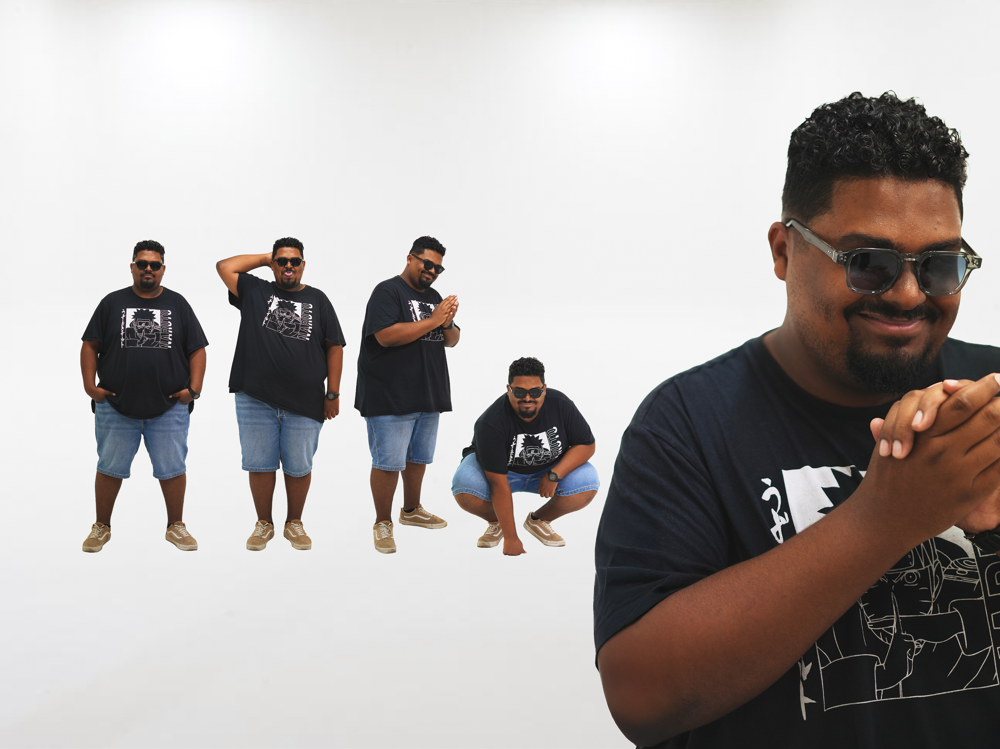

Sobriété, modernité et sens du détail.

Passionné par le design graphique et les créations visuelles, j'ai développé un style mêlant sobriété, modernité et sens du détail. En tant qu'étudiant en design graphique, je m'efforce de créer des projets uniques, fonctionnels et mémorables. Mon travail reflète mon amour pour la simplicité et mon envie de m'améliorer constamment.
En dehors de mes études, je suis passionné par les jeux vidéo et la photographie. J'aime partager mes idées et découvrir d'autres horizons créatifs, que ce soit à travers mes projets ou mes collaborations.
Me contacterILOI — 2025 / 2026
Un parcours transversal mêlant infographie, web, design graphique, motion design et communication 360°.
Infographie
Techniques de détourage, création d'affiches et de supports promotionnels.
Web — HTML / CSS / Webflow
Structuration, mise en page responsive et intégration d'interfaces.
Design graphique & édition
Identité de marque, affiches, mise en page éditoriale et brochures.
UI / UX & motion design
Maquettage d'interfaces, parcours utilisateurs et animation.
Communication 360°
Stratégie de marque, personas, benchmark et plans de communication.
De la recherche au livrable final
Suite Adobe
Illustrator, Photoshop, InDesign, After Effects
Figma
Maquettage UI/UX, prototypage
Webflow
Intégration web sans code
HTML / CSS
Structuration & responsive